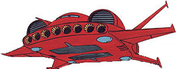

| Dodai YS Bomber/Transport Aircraft |
|
|  | |
General and Technical Data |
|
|
Unit type: bomber/subflight Armament: 8 x missile launcher |
|
| Technical and Historical Notes | |
|
Initially developed as a bomber aircraft, the Dodai YS quickly became famous for its ridiculous thrust-to-lift ratio. This allows it to carry a mobile suit on its back and ferry it into combat, also providing it with a massive boost to mobility and attack power. Dodai YS patrols, each with a Gouf on their back, are common scenes in Zeon-occupied Eastern Europe and Asia.
Cockpit |
 RPG quick stats sheet
RPG quick stats sheet